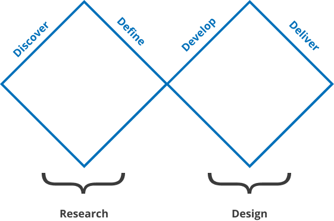

Plusholidays
| Duration | 12/2020 - 06/2021 |
| My role | Product Designer |
| Team | Nacho Gisbert (Product) Eliuvis Matos, Javier Menendez & Juan Gabriel Díaz (back-end) Orlando Merayo, Ever Santiesteban & Oscar Romero (front-end) |
| Methodology | Double Diamond |
A cohesive ERP to expand the business
PlusHolidays was a traditional family business renting apartments in Calpe, Alicante (Spain). Little by little, they expanded their business to include other types of accommodation and extended to nearby areas. Over time, they acquired a privileged position in renting villas. PlusHolidays could be considered a competitor in the market, but as an underdog. Now, it was high time to step up and surpass competitors.
Expanding and scaling a business without technology seems against the odds currently. Hence, we had to develop a solid and cohesive ERP system that facilitates all their daily tasks, from managing employees to forecasting finances with Business Intelligence.
So... how did we offer them the bespoke solution that tackled all their particular needs? By using the double diamond methodology.
Double diamond methodology
- Research
- Readings
- Interviews
- Benchmarking
- Personas & Context of use
- Information architecture
- Navigation maps
- Flow maps
- Diagrams
- Wireframes
- Design system
- Prototypes and mockups
Discover
Research
The first step in the double diamond framework is the discovery process. In this particular case, I found myself with no time for research. I had just joined my current company, and we were already in a rush to build the product. We had a requirement list that my boss had compiled from conversations with PlusHolidays. I used it as secondary research, but there was a lack of details that forced me to conduct interviews with people at PlusHolidays.
READINGSAs I mentioned in the previous introduction, my introduction to the project was challenging. There was a rush to kick off, and the Product Requirements document resembled more of a technical specification than a comprehensive guide. It was vague in some areas and confusing in others. Nevertheless, it provided useful information that helped me focus my research.
Interviews & BenchmarkingGiven the uncertainty caused by the ambiguous Product Requirements Document (PRD), we believed that the best solution would be to interview the employees who were going to use the software. Our goal was to understand their context of use, their roles, and, of course, their ultimate jobs to be done. More over, communication was scattered in various directions. Not only did we have to comprehend what they wanted, but they also needed to understand what they truly needed.
In addition to interviews, we conducted benchmarking of some competitors and gathered references, extracting valuable insights from the reviews of final clients and property owners. This information, combined with the interviews, provided us with a solid starting point to define the genuine requirements of the PlusHolidays ERP.
Final clients perspective
Positive: detailed and reliable property information, easiness of booking and discounts
Negative: extra fees hidden and unclear property descriptions
Positive: helpful, proactive, good communication, easy bookings and check-in details.
Negative: Slowness, unhelpful, bad manners. problematic process
Positive: Clean, well-equiped
Negative: Dirty, poorly maintained, lack of equipment or misleading photos
Positive: good areas, calm environment, alarms and security codes.
Negative: inadequate lighting, or unsafe surroundings
Positive: flexible check-in/check-out times, local recommendations, modification or cancelling possibilities.
Negative: lack of additional services, or amenities. Lack of possibility to change dates. Problems with refunds.
Owners perspective
Positive: high occupancy rates and stable income.
Negative: Fluctuating occupancy rates, delayed payments, or insufficent marketing efforts.
Positive: included maintenance and cleanliness, good communication about property issues.
Negative: Lack of cleanliness or care and bad communication about property issues.
Positive: Easy and transparent communication. Clear and useful information.
Negative: Poor communication, lack of financial transparency, or unavailability of performance reports can strain the relationship.
Positive: assistance and facilitation of legal obligations and burocracy.
Negative: lack of support in legal compliance.
Positive: Fidelity rewards, good reputation rewawrds.
Negative: not giving possibility to answer reviews.
Define
While receiving information from interviews, the PRD, and the feature list, we began to define and shape the product. We started by creating personas representing the users of the product, understanding their genuine needs. Additionally, we defined the information architecture, which aided us in having a clear and comprehensive understanding of the project.
Personas & Context of use
The first step in the double diamond framework is the discovery process. In this particular case, I found myself with no time for research when I joined my current company. We were already in a rush to build the product. I had a requirement list that my boss had compiled from conversations with PlusHolidays. While I used it as secondary research, there was a lack of details that necessitated conducting interviews with people at PlusHolidays.
Role
Overseeing the overall operations, setting strategic goals, and ensuring the business's success.
- Strategic Planning: Makes informed strategic decisions with data. Establishes company policies and rules of the product.
- Resource Allocation: Manages resources, to streamline profitability.
- Timetable Management: Manages staff schedules, meetings, and company events.
- Performance Monitoring: Monitors (KPIs) and financial metrics through the ERP dashboard to assess the company's overall performance and identify areas for improvement.
Laptop / PC
Office / Home
Role
Overseing the company's financial aspects, including budgeting, forecasting, financial reporting and dealing with authorities.
- Financial Reporting: Generates financial statements, data, and reports for management, stakeholders and government.
- Budgeting: Manages budgets within the ERP, tracking expenses, revenues, and variances against planned budgets.
- Vendor Management: Handles payments to property owners, suppliers, and service providers.
Laptop / PC
Office / Home
Role
Promoting apartments and villas to get new customers and improve recurrency.
- Campaign Tracking: Monitors marketing campaigns and lead generation activities through the ERP, analysing their effectiveness.
- Customer Insights: Utilises ERP data to understand customer demographics, preferences, and behaviours for targeted marketing strategies.
- Sales Integration: Collaborates with the sales team, using ERP data to align marketing strategies with sales goals and customer demand.
Laptop / PC
Office / Home
Role
Assisting customers with inquiries, bookings, and concerns, ensuring a positive customer experience.
- Customer Database: Needs to access to customer profiles, booking history, and preferences for personalized service.
- Booking Management: Processes bookings, checks availability, and updates the ERP with reservation details.
- Communication: Communication with customers and internal teams regarding bookings and customer requests.
Laptop / PC
Office / Home
Role
Responsible for the maintenance and repairs of apartments and villas.
- Work Orders: Receives work orders through the ERP system, detailing maintenance tasks, repairs, and required materials.
- Inventory Management: Manages maintenance supplies and inventory levels through the ERP, ensuring necessary items are in stock.
- Progress Updates: Updates work status, completion, and any issues encountered through the ERP, maintaining a real-time log of maintenance activities.
Mobile
Anywhere
Role
Ensuring properties are cleaned thoroughly before guest arrivals and after departures.
- Cleaning Schedules: Accesses cleaning schedules and assignments through the ERP, organizing tasks based on check-in and check-out dates.
- Inventory Management: Monitors cleaning supplies and requests restocks via the ERP system to maintain adequate inventory levels.
- Quality Control: Records cleaning standards and guest feedback within the ERP, ensuring consistent service quality and addressing any issues promptly.
Mobile
Anywhere
Role
Responsible for managing the company's property portfolio, ensuring all apartments and villas are well-maintained, rented out, and generating revenue.
- Property Management: Tracks occupancy rates, rental payments, and property maintenance schedules.
- Financial Management: Manages property-related finances, including budgets, expenses, and revenue streams.
- Reporting: Generates reports on occupancy, rental income, and property maintenance costs for strategic decision-making.
Laptop / PC
Office / Home
Role
Owns several properties that are managed and rented out by the company.
- Property Performance: Understading of the benefits of using Plusholidays, rental incomes, and expenses related to their properties.
- Communication: Communicates with property managers and managing reviews.
- Financial analysis: overviewing rental incomes and expenses on every single property and as a whole.
Laptop / PC
Office / Home
Information Architecture
Usually, information architecture is integrated during the design (development) stage. However, for this project, I opted to include it in the definition step. In our case, it served as a communication and understanding tool rather than just a blueprint. Information architecture played a crucial role in helping us grasp the project's logic and requirements. Most importantly, it ensured that everyone involved was on the same page. Despite being a communication tool, it still functioned as a design tool. At times, it even became a method for me to discern what Plusholidays wanted and how they needed it to be done.
Develop
Wireframing
We approached the project through a step-by-step process, dividing the work into different stages to maintain better control over the entire process. Once the information architecture appeared clear to everyone involved, we proceeded to create low-fidelity wireframes to visualize how it could be implemented in reality. These wireframes were quick and cost-effective, allowing us to iterate extensively. While many issues were resolved during this stage, several others remained unresolved and latent.
A fresh Design System
After the wireframes were largely accepted and to expedite the process, we began developing a new design system. This system was intended not only for the bespoke ERP but also for the website they planned to build later. I conceptualised a design system that was not only contemporary but also enduring, supported by comprehensive and user-friendly documentation.
Content:
In contrast to most design systems, the content in this one didn't need to be accessible to everyone but had to be useful for the team. Hence, we allowed team members to write in the way they preferred, as nobody knows their needs better than themselves. We provided simple guidelines, reminding them to make their content easy to understand, clear, and straightforward for optimal performance.
Color:
Being a corporate tool, the brand's colour scheme was an implicit or de facto requirement. Their brand colours were blue and red, and we chose various shades of blue for the overall software. The particular red colour was sparingly used for specific accents in a few areas. Different shades of black were also employed in this project.
Over time, evolving needs led us to incorporate a wider range of colours, although they were still used as accents.
Spacing:
Regarding spacing and unlike the normal design systems we opted for a 5px basis. We employed most of the multiples of 5 (10, 15, 20, 25, 30, 40, 50, 60, 75, 80 and 100). By this we could calculate very easly the right proportions.
Typography:
My colleague, Nacho, possessed extensive knowledge of typography and spearheaded this aspect on his own. The chosen typeface is "Inter," which, according to him, was the perfect fit due to its exceptional readability, versatility, accessibility, and its modern style that aligned well with the branding of the SAAS application. We all concurred that the selected typeface was ideal, given the requirement to display copious amounts of data in tables and reports, the presence of numerous sections, the professionalism of the product, and the necessity for various sizes and weights in different elements.
Iconography:
Iconography is my favourite aspect of design systems, and for this project, I allowed my creativity to soar. I crafted duo-tone icons, blending the primary blue with the primary neutral (grey). These icons were designed as line icons without a defined outline, imparting them with distinctive character and setting them apart from competitors. I take great pride in this modern and bespoke solution.
Documentation:
An integral aspect of the design system is its documentation. In environments with diverse designers and developers, the risk of accumulating design debt is significant. Documentation plays a vital role in mitigating this debt, reducing it to a minimum.
Deliver
Although the delivery phase is typically when the product goes live, in the context of this case study, I will refer to the delivery as the final mockups and interactive prototypes I provided after a few revisions. Some aspects did not progress beyond the wireframe stage, which led to these final iterations being crucial for the project.